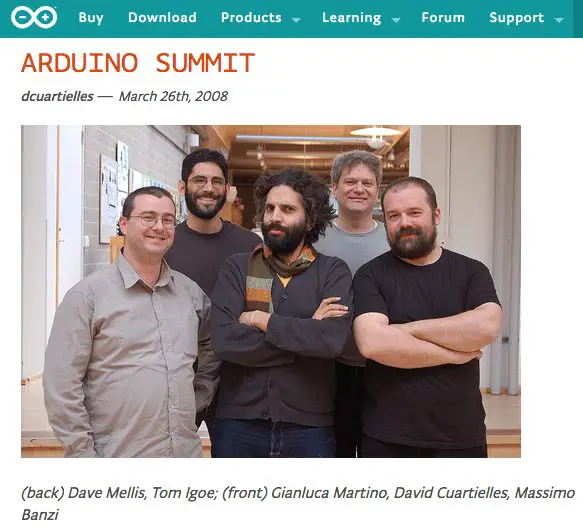

El estudiante colombiano Hernando Barragán, fue quien desarrolló la tarjeta electrónica Wiring, el lenguaje de programación y la plataforma de desarrollo. Basandose en su trabajo, Massimo, David Cuartilles , investigador en el instituto, y Gianluca Martino desarrollador local contratado, desarrollaron una plataforma de hardware y software libre, más pequeña y económica, a la que llamaron Arduino. El curioso nombre del proyecto, tiene su origen en el Bar di Re Arduino (Antiguo Rey Europeo entorno al 1002), donde Massimo Banzi, uno de los fundadores, pasaba parte de su tiempo libre. Poco tiempo después de terminar el desarrollo, el instituto cerró sus puertas y los desarrolladores intentaron sobrevivir con el nuevo sistema Arduino. El proyecto gustó mucho, desplazando a otras soluciones del mercado como BasicStamp y los míticos Pics. El mismo Google colaboró en el desarrollo del Kit ADK (Accesory Development Kit), una placa Arduino capaz de comunicarse directamente con teléfonos móviles inteligentes bajo el sistema operativo Android.
